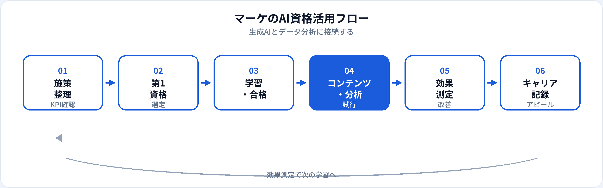

デジタルマーケ・コンテンツマーケ・プロダクトマーケ・CRM/MA運用など、マーケティング職は「作る・配る・測る」のサイクルが中心です。生成AIは、コピーのたたき台、ペルソナ整理、レポート要約を加速できます。一方、誤った数値解釈やブランド逸脱、法規リスクは施策の信頼を損ないます。本記事では、マーケ職が取るべきAI資格を比較し、業務別の活用からキャリアまで2026年6月時点で整理します。営業職向け・企画職向けの記事も併せて参照してください。
マーケ職にAI資格が効く理由
マーケの成果は「クリエイティブの良さ」だけでなく、再現性のある施策設計と数値に基づく改善で評価されます。資格学習は、生成AIを制作の下書きエンジンとして使いつつ、公開前の検証とコンプライアンスを人間が担う——という型を身につける助けになります。
制作スピードの向上
キャッチコピー案・記事骨子・SNS投稿の下書きを速く作り、A/Bテストやクリエイティブ制作に時間を割ける。
データドリブンの土台
レポート要約・仮説整理・KPI設計のたたき台を作り、分析チームとの会話をスムーズにする。DS検定やG検定はここを補強する。
AI施策の説明力
レコメンド・広告最適化・生成コンテンツ導入では、仕組みと限界を理解したマーケ担当が、法務・ブランド・エンジニアと調整しやすい。
試験対策はこちら
マーケの種類と資格の効き方
| マーケの種類 | AI資格の主な役割 | 第1候補の目安 |
|---|---|---|
| コンテンツ・SNSマーケ | 記事骨子、見出し案、投稿文案の下書き | 生成AIパスポート |
| デジタル広告・パフォーマンス | 広告文案、ランディングページ案、レポート要約 | 生成AIパスポート → DS検定（任意） |
| プロダクトマーケ（PMM） | ペルソナ、競合比較、ポジショニング整理 | 生成AIパスポート → G検定（AI機能あり） |
| CRM/MA・リテンション | シナリオ設計、メール文案、セグメント仮説 | 生成AIパスポート ＋ DS検定（任意） |
| ブランド・コーポレート | トーン統一、リスク説明、ガイドライン策定 | 生成AIパスポート（倫理・法務章を重点） |
業務別：生成AIの活用シーン
| 業務 | 生成AIの使い方（例） | 資格で学ぶ関連知識 |
|---|---|---|
| キャンペーン企画 | ターゲット別メッセージ案、チャネル別施策リスト、KPI候補 | プロンプト設計、出力検証 |
| コンテンツ制作 | 記事構成、FAQ案、SEOキーワードの論点整理 | 著作権、ハルシネーション、Human-in-the-Loop |
| 広告・LP文案 | 見出し・CTAの複数案、ペルソナ別訴求の下書き | 景表法・誇大表現の人間確認 |
| 分析レポート | GA4/広告レポートの要約、改善仮説の列挙 | 相関と因果の区別（DS検定/G検定も有効） |
| A/Bテスト設計 | 検証仮説、成功指標、想定される学びの文案 | 評価指標の妥当性は人間が判断 |
| 競合・市場調査 | 公開情報の比較軸提案、差別化ポイントの整理 | 情報源確認、事実と推測の区別 |
プロンプト設計の深掘りは学習ガイド、データ分析職の全体像はデータアナリストとはを参照。
おすすめ資格の比較
| 資格 | マーケ職との相性 | 学習時間目安 | 向いているマーケ |
|---|---|---|---|
| 生成AIパスポート | ◎ コンテンツ・文案・レポート要約に直結 | 20〜40時間 | コンテンツ、SNS、広告、CRM/MA全般 |
| DS検定（リテラシー） | ○ データドリブン施策・KPI設計 | 40〜80時間 | パフォーマンスマーケ、分析寄りPMM |
| G検定 | ○ AI機能・レコメンド理解 | 80〜150時間 | AIプロダクトのPMM、MA/SaaS企画 |
| ITパスポート | △ MA/SaaS・IT投資の土台 | 40〜80時間 | ツール選定、ベンダー調整が多いマーケ |
第1候補と学習順
-
第1：生成AIパスポート
文案・コンテンツ・レポート要約のたたき台づくりにすぐ効く。合格後、進行中のキャンペーン1本に試験導入する。
-
第2（任意）：DS検定リテラシー
CPA/CVR改善、セグメント分析、ダッシュボード読解を強化したいパフォーマンスマーケ向け。
-
第2〜3（任意）：G検定
レコメンド・広告最適化の背景理解、AI機能付きプロダクトのPMM、AI PM志向の場合。
| あなたのマーケ業務 | 第1候補 |
|---|---|
| 記事・SNS・広告文案が中心 | 生成AIパスポート |
| 数値分析・改善サイクルが中心 | 生成AIパスポート → DS検定 |
| AIプロダクトのGo-to-Market | 生成AIパスポート → G検定 |
| MA/SaaS導入・運用が中心 | 生成AIパスポート ＋ ITパスポート（任意） |
マーケ職の活用フロー

マーケでは仮説→制作→配信→測定→改善のサイクルが基本です。AIは制作と整理を速くし、効果判断と公開責任は人間が担う——この分担をフローに組み込みます。
合格後の実践（施策・分析・改善）
キャンペーンプロンプト
「ターゲット・訴求・チャネル・KPI・リスク」の固定プロンプトを作る。数値目標は過去実績と突合して確定。
コンテンツ制作パイプライン
骨子→下書き→ファクトチェック→トーン調整→公開。AIは骨子・下書きまで。引用・統計は出典必須。
週次レポート要約
広告・Web・CRMの数値を要約し、改善仮説3つを列挙。因果関係は検証計画とセットで記載。
マーケ職の評価はCV・LTV・ブランド指標に結びつきます。AIで短縮した時間を、テスト設計と顧客インサイト収集に再投資することが、キャリア上も効果的です。
マーケ現場の注意点
| やってよいこと | 避けるべきこと |
|---|---|
| ブランドガイドに沿った文案案の生成 | 景表法・誇大表現を検証なしで公開 |
| 公開データに基づく競合整理 | 未公開のキャンペン数値・顧客リストの入力 |
| レポート要約と改善仮説の列挙 | 相関を因果と断定して施策判断 |
| 画像生成ツールの商用条件確認 | 著作権・肖像権を無視した素材利用 |
生成AIパスポート第4章（著作権・個人情報・倫理）は、マーケ職が社内ガイドラインを説明できるレベルまで整理するのに向いています（学習ガイド）。
キャリア・転職でのアピール
現職（マーケのまま）
「生成AIパスポート（年月）」と、制作リードタイム短縮「A/Bテスト実施数増加」「CPA改善○%」などをセットで記載。社内のAI活用ガイドライン策定への参画もアピール材料になります。
転職・キャリアチェンジ
- プロダクトマーケ（AI/SaaS） メッセージ設計 ＋ 生成AIパスポート ＋ G検定（任意）＋ 定量成果
- グロースマーケ ファネル改善 ＋ 生成AIパスポート ＋ DS検定（任意）＋ テスト実績
- AIプロダクトマネージャー 顧客理解 ＋ 生成AIパスポート ＋ G検定（詳細）
- 生成AIエンジニア（業務寄り） 社内プロンプト設計 ＋ 生成AIパスポート ＋ 実装学習（詳細）
資格の一般的な活かし方はAI資格はキャリアにどう役立つ？、履歴書は記載例ガイドを参照。
資格だけでは足りない点
マーケ職の評価は顧客理解と施策の再現性です。資格はリテラシーの証明になりますが、インサイトの深さ、チャネル運用の実務、ブランドとの整合は現場経験で培う領域です。合格後は、小さなキャンペーンで制作→配信→測定→改善を1サイクル回すことを優先してください。
よくある質問
マーケティング職におすすめのAI資格はどれ？
コンテンツ・文案が主なら生成AIパスポート。数値分析を強化するならDS検定、AIプロダクトのPMMならG検定も検討。
データ分析を多くするマーケにG検定は必要？
必須ではありません。分析の読み方を深めるならDS検定リテラシーが近道なことが多いです。
広告文案やSNS投稿に生成AIを使う注意点は？
ブランドガイド・景表法・著作権を確認。AI出力はたたき台と割り切り、公開前に人が検証する。
マーケから生成AIエンジニアやPMに転職できる？
可能です。顧客理解と効果測定の経験は強み。資格に加え定量実績があると説得力が増します。